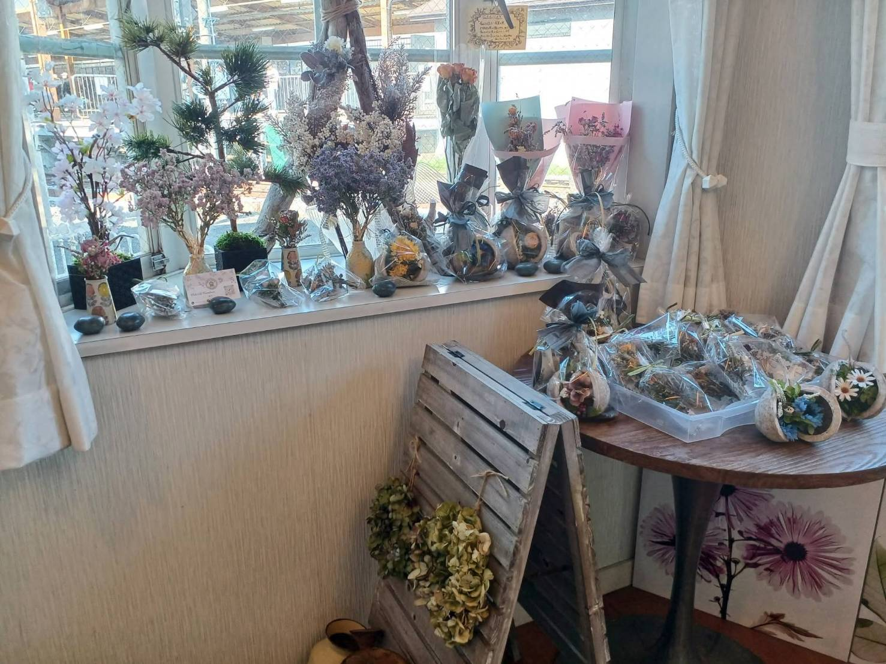
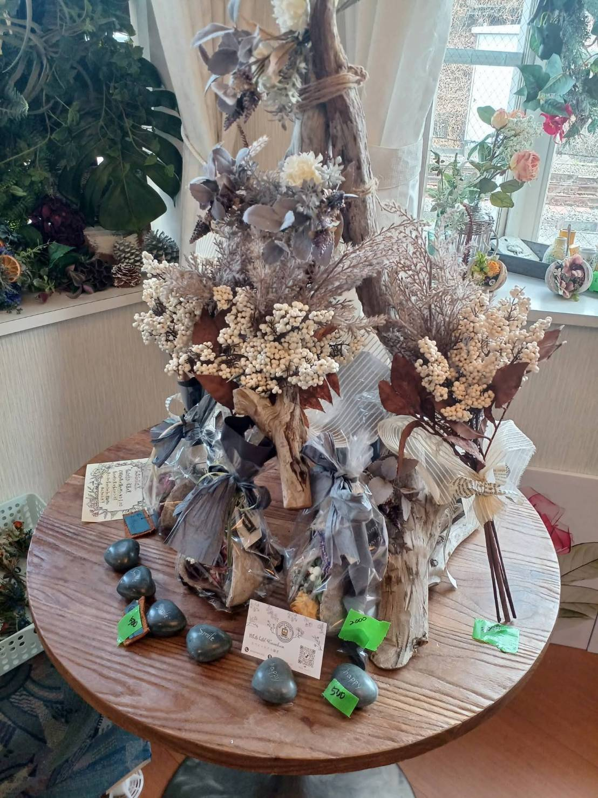
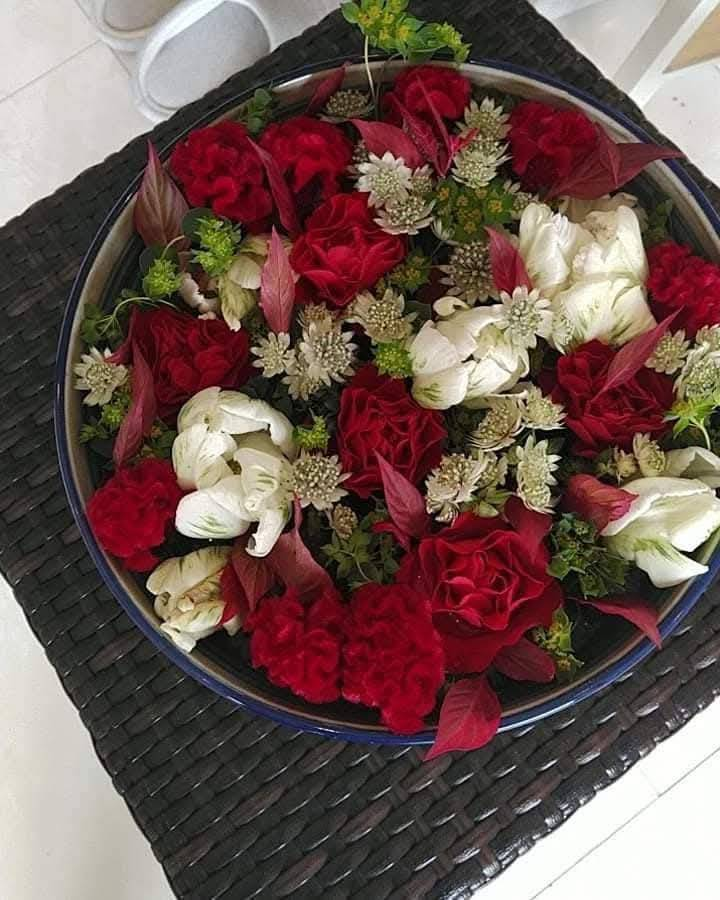
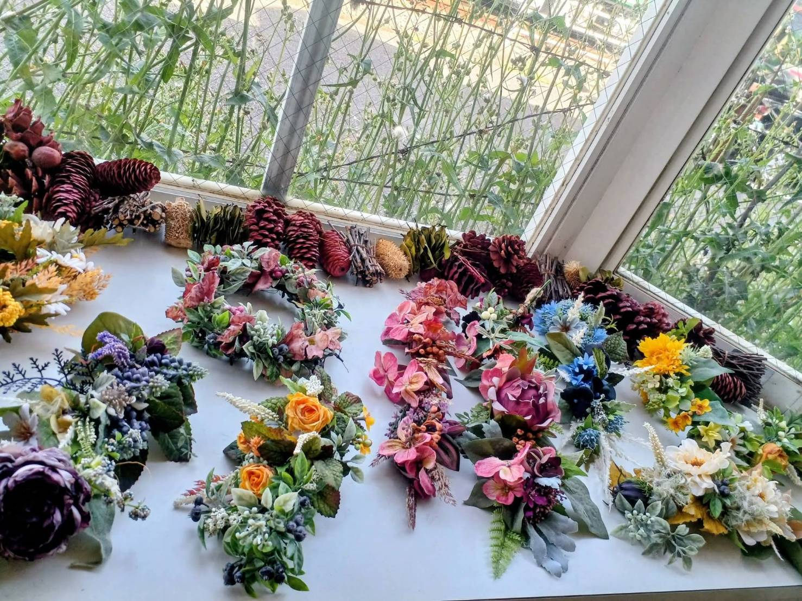

ART FLOWER SHOP HANAKISHU
アートフラワーショップ花木秀
ホワイトホテル鎌倉の1階エントランスにある、小さなフラワーショップです。宿泊される方だけでなく、地域の方や鎌倉を訪れた方にも、どなたでもお立ち寄りいただけます。




お店について
相模原市で「アバンギャルド花木秀」を営んできた松浦さんが、ホワイトホテル鎌倉の新たな運営パートナーとして加わり、この場所で「アートフラワーショップ花木秀」を運営しています。花を通じて、旅の記憶や人と地域のつながりが生まれる場所を目指しています。
店舗情報
- 営業時間
- 13:00〜20:00
- 営業日
- 年中無休（不定休あり）
- 取扱商品
- 生花、フラワーアレンジメント、ドライフラワー、造花、花手水など
- お支払い
- 現金、クレジットカード、各種キャッシュレス決済
- 電話
- 090-3253-0423
- 所在地
- 〒248-0012 神奈川県鎌倉市御成町2-20 ホワイトホテル鎌倉1階
花のある宿
客室や館内にも、それぞれの空間に寄り添う花を取り入れています。装飾内容は季節や仕入れ状況により変わります。
← ホームへ戻る